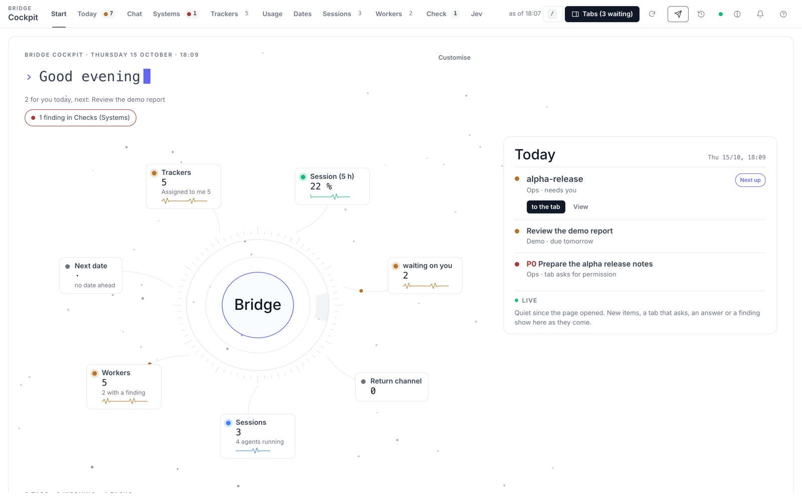
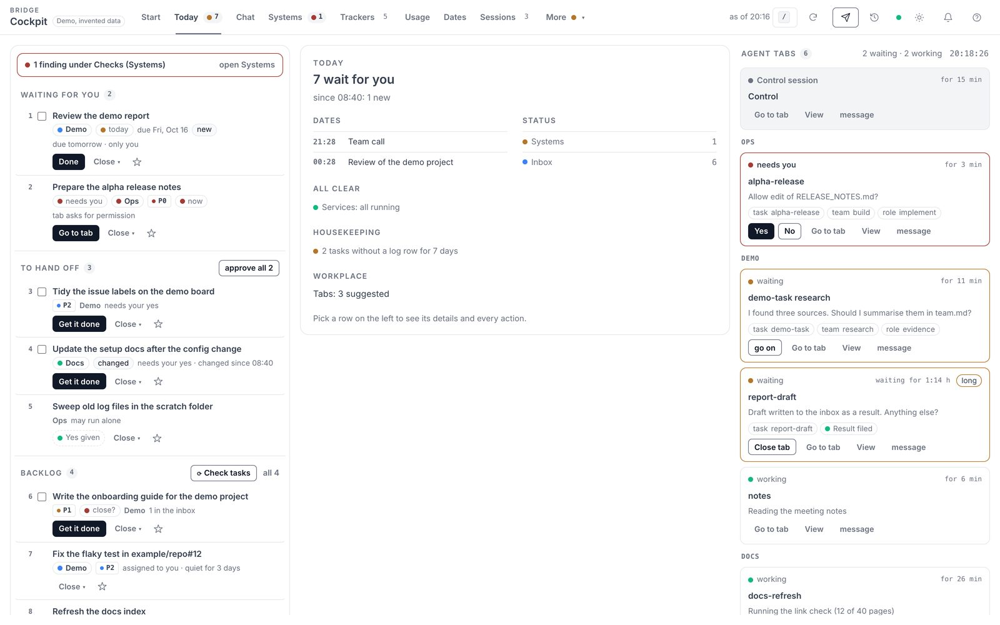
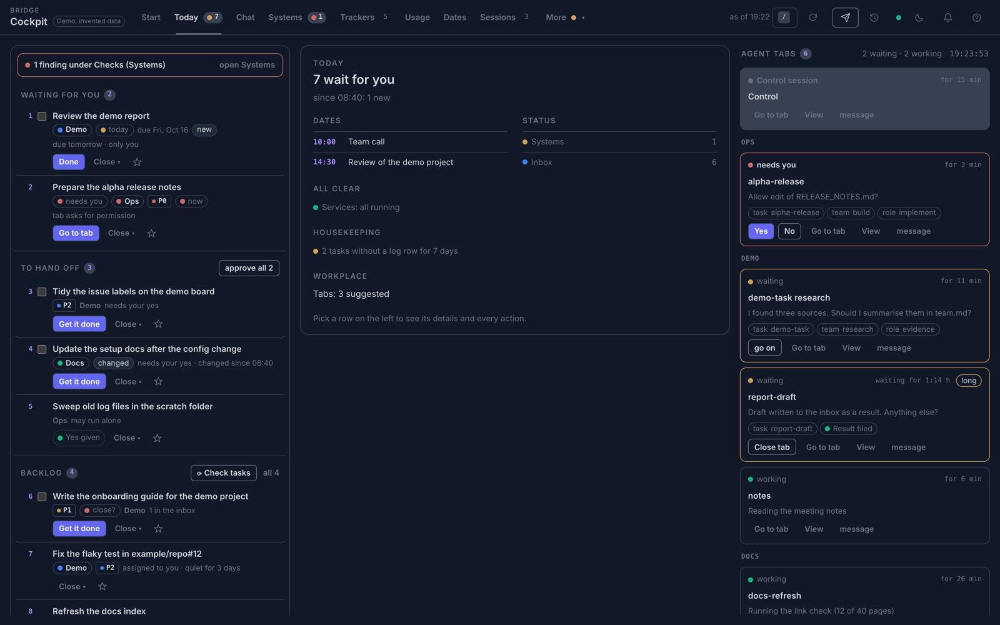
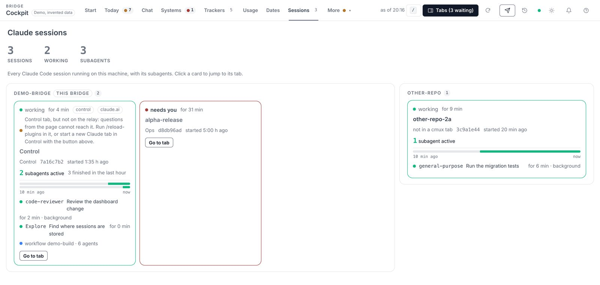
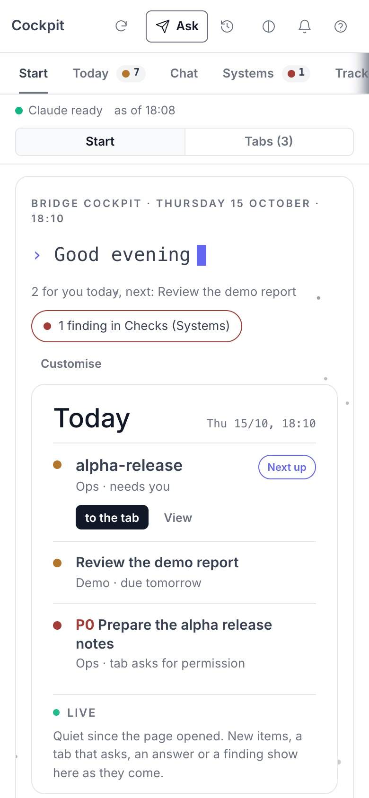

Feature
Feature
Cockpit
The cockpit is one browser tab that shows what is going on in your Bridge and lets you act on it. It runs on your own computer and nowhere else.
Das Cockpit ist ein Browser-Tab, der zeigt, was in deiner Bridge los ist, und dich direkt handeln lässt. Es läuft auf deinem eigenen Rechner und nirgends sonst.
The cockpit works and is used daily, but it is young. Pages, buttons and settings still change. Expect rough edges, and please report what breaks or confuses you as an issue.
Das Cockpit funktioniert und wird täglich benutzt, ist aber jung. Seiten, Knöpfe und Einstellungen ändern sich noch. Rechne mit Ecken und Kanten und melde bitte als Issue, was kaputtgeht oder verwirrt.
Read the full cockpit guide →Den ganzen Cockpit-Guide lesen →

What it is
Was es ist
One page for the whole Bridge
Eine Seite für die ganze Bridge
A local web page, served only on 127.0.0.1. It brings together what you otherwise look up in many places, and it acts on it with a click.
Eine lokale Webseite, die nur auf 127.0.0.1 antwortet. Sie bringt zusammen, was du sonst an vielen Stellen nachschlägst, und handelt auf Klick.
Briefing, inbox and tasksBriefing, Inbox und Aufgaben
What waits for you, what you can hand off, and your tasks, on one page.
Was auf dich wartet, was du übergeben kannst und deine Aufgaben, auf einer Seite.
Agent tabs and sessionsAgent-Tabs und Sitzungen
Which agent tabs run, which one asks for a yes, and which Claude sessions are open with their subagents.
Welche Agent-Tabs laufen, welcher ein Ja braucht und welche Claude-Sitzungen mit ihren Subagenten offen sind.
Workers, machines, tokensWorker, Maschinen, Tokens
The background workers, the machines of your fleet, and how many tokens the week has used.
Die Hintergrund-Worker, die Maschinen deiner Flotte und wie viele Tokens die Woche verbraucht hat.
A click on a button runs a script the Bridge already has, such as inbox.py, task.py or workplace.py. The cockpit adds no second way to change things.
Ein Klick auf einen Knopf startet ein Skript, das die Bridge ohnehin hat, etwa inbox.py, task.py oder workplace.py. Das Cockpit bringt keinen zweiten Weg mit, etwas zu ändern.
What you see
Was du siehst
Start, Today, Sessions
Start, Heute, Sitzungen
Three pages carry most of the day. The page also works in dark mode and on a phone.
Drei Seiten tragen den größten Teil des Tages. Die Seite funktioniert auch im Dunkelmodus und auf dem Handy.




The way inDer Einstieg
A greeting, the day in one line, a field that asks the chat directly, and tiles that each open a page.
Eine Begrüßung, der Tag in einer Zeile, ein Feld, das den Chat direkt fragt, und Kacheln, die je eine Seite öffnen.
What waits for youWas auf dich wartet
The briefing: approve, defer or drop rows, hand a task to an agent tab, or answer a tab that asks for a yes.
Das Briefing: Zeilen freigeben, verschieben oder verwerfen, eine Aufgabe an einen Agent-Tab übergeben oder einem Tab antworten, der ein Ja braucht.
Your Claude sessionsDeine Claude-Sitzungen
Open sessions with the subagents they started, so you see who is working on what.
Offene Sitzungen mit den Subagenten, die sie gestartet haben, damit du siehst, wer woran arbeitet.
Fits your Bridge
Passt zu deiner Bridge
It adapts to the Bridge it runs in
Es passt sich der Bridge an, in der es läuft
The cockpit is not tied to one look or one language.
Das Cockpit ist weder an ein Aussehen noch an eine Sprache gebunden.
Colours and fontsFarben und Schriften
Taken from the DESIGN.md of that Bridge. A Bridge without one gets neutral defaults.
Aus der DESIGN.md dieser Bridge übernommen. Eine Bridge ohne eine bekommt neutrale Vorgaben.
LanguageSprache
Read from the config: cockpit.language, else your conversation language, else English.
Aus der Config gelesen: cockpit.language, sonst deine Gesprächssprache, sonst Englisch.
Your own briefingDein eigenes Briefing
What the page shows comes from your briefing profile. Without one of your own, a built-in profile runs.
Was die Seite zeigt, kommt aus deinem Briefing-Profil. Ohne eigenes läuft ein eingebautes Profil.
Safety
Sicherheit
Local only, and nothing goes out by itself
Nur lokal, und nichts geht von allein raus
The page can approve inbox entries and start agents, so it is built to do nothing a stranger could trigger.
Die Seite kann Inbox-Einträge freigeben und Agenten starten. Deshalb ist sie so gebaut, dass kein Fremder etwas auslösen kann.
Local address onlyNur lokale Adresse
The server answers on 127.0.0.1 and never on every interface of your computer.
Der Server antwortet auf 127.0.0.1 und nie auf allen Schnittstellen deines Rechners.
Sign-in link with a tokenAnmeldelink mit Token
You open the page once through a link that carries a secret key. The browser keeps it in a cookie, and the address bar does not.
Du öffnest die Seite einmal über einen Link mit geheimem Schlüssel. Der Browser behält ihn in einem Cookie, die Adressleiste nicht.
A fixed list of commandsEine feste Liste von Befehlen
The buttons send verbs, never free commands. Only scripts from the Bridge's own list can run, and every write leaves a line in an audit log.
Die Knöpfe senden Verben, nie freie Befehle. Es laufen nur Skripte aus der eigenen Liste der Bridge, und jede Schreibaktion hinterlässt eine Zeile im Audit-Log.
Questions to Claude are signedFragen an Claude sind signiert
A question carries a signature that a program merely writing files into your repository cannot forge.
Eine Frage trägt eine Signatur, die ein Programm, das nur Dateien in dein Repository schreibt, nicht fälschen kann.
Off by default
Standardmäßig aus
Anything that sends something or runs by itself stays off until you switch it on.
Alles, was etwas versendet oder von allein läuft, bleibt aus, bis du es einschaltest.
RelayRelay
Hands questions from the page to your control session. Needs an optional mod.
Reicht Fragen von der Seite an deine Steuer-Sitzung weiter. Braucht einen optionalen Mod.
Off by defaultStandardmäßig ausDaily triageTägliche Sortierung
Sorts your tasks and inbox once a day by itself, with a small model call. Otherwise only on a click.
Sortiert deine Aufgaben und die Inbox einmal am Tag von allein, mit einem kleinen Modellaufruf. Sonst nur auf Klick.
Off by defaultStandardmäßig ausJevJev
Orders your rows by urgency. When switched on, it sends the titles and a few fields of up to 20 rows to an external API (api.typesafe.ai). Details in the guide.
Ordnet deine Zeilen nach Dringlichkeit. Wenn eingeschaltet, sendet es Titel und einige Felder von bis zu 20 Zeilen an eine externe API (api.typesafe.ai). Details im Guide.
Off by defaultStandardmäßig ausLogin itemAnmeldeobjekt
Starts the cockpit when you log in on macOS and restarts it after a crash.
Startet das Cockpit beim Anmelden unter macOS und nach einem Absturz neu.
Off by defaultStandardmäßig ausGet started
Loslegen
How to switch it on
So schaltest du es ein
You need an onboarded Bridge, so a bridge-config.yaml in the repo root, and python3 with PyYAML.
Du brauchst eine eingerichtete Bridge, also eine bridge-config.yaml im Repo-Wurzelverzeichnis, und python3 mit PyYAML.
cockpit:
enabled: true
/cockpit # or from any terminal in the Bridge rootoder aus jedem Terminal im Bridge-Wurzelverzeichnis python3 scripts/bridge-cockpit.py open
The server starts, or the running one is reused, and the page opens. Open the link once; after that the plain address works as a bookmark in that browser. Every other setting is optional and has a default.
Der Server startet, oder der laufende wird weiterverwendet, und die Seite öffnet sich. Öffne den Link einmal; danach funktioniert die einfache Adresse in diesem Browser als Lesezeichen. Jede weitere Einstellung ist optional und hat einen Standardwert.
Go deeper
Tiefer einsteigen
Read next
Weiterlesen
Get startedLoslegen
One prompt. Your own private bridge.Ein Prompt. Deine eigene, private Bridge.
Paste it into Claude Code, Codex or Copilot CLI. Your agent follows SETUP.md, shows you its plan and waits for your go.Kopier ihn in Claude Code, Codex oder Copilot CLI. Dein Agent folgt SETUP.md, zeigt dir seinen Plan und wartet auf dein Go.